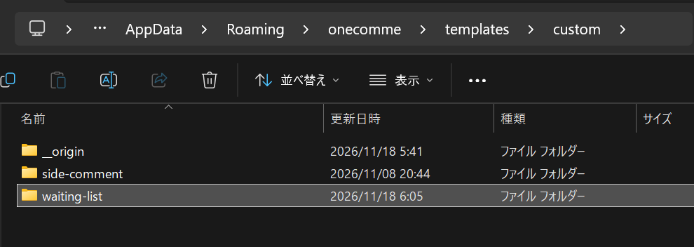
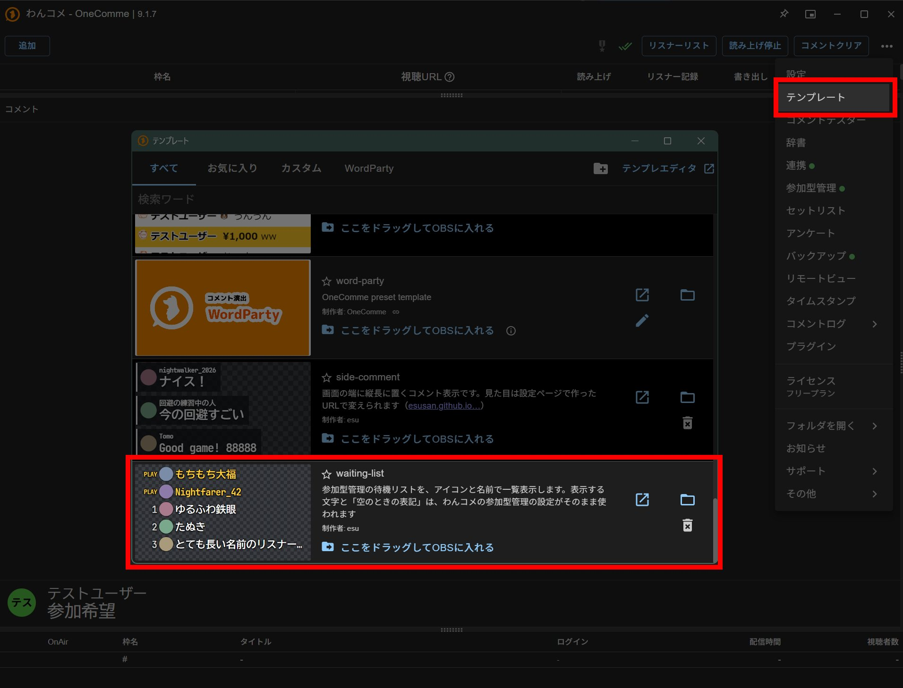

waiting-list
わんコメの参加型管理の待機リストを、アイコンと名前で一覧表示するテンプレートです。プレイ中の人は上に色を変えて、待っている人は並んだ順に番号付きで表示します。ここで見た目を決めると、OBSに貼るURLができます。
見た目を決める
OBSのブラウザソースに貼ってあるURLをここに貼ると、そのときの設定が下に読み込まれます。初めての方は空のままで大丈夫です。
OBSのブラウザソースの大きさの目安：幅 × 高さ
使い方
-
テンプレートをダウンロードして展開します。最初に1回だけで大丈夫です。
-
中の
waiting-listフォルダを%APPDATA%\onecomme\templates\custom\に入れます（エクスプローラーのアドレス欄にこのパスを貼ると開けます）。
-
わんコメのテンプレート画面（右上の「…」メニュー →「テンプレート」）に waiting-list が出ていればOKです（わんコメが認識できているかの確認だけです）。出ていなければ、わんコメを起動し直してください。

-
わんコメの参加型管理を開いて「有効化」にチェックを入れ、参加ワードを決めます。参加型管理の設定（歯車）にある「OBS用テンプレート」「行／列」「空のときの表記」は、このテンプレートでは使いません。表示する文字や並べ方は、このページで決めます。
-
OBSにブラウザソースを追加し、「ローカルファイル」のチェックを外したまま、URLにこれを貼ります。上で選んだ見た目の設定がURLの末尾に入っています。
コピーしましたわんコメのポートを11180から変えている場合は、URLの数字をご自分のものに書き換えてください。
-
同じ画面で、ブラウザソースの大きさを幅 × 高さ くらいにします。
幅は、全角10文字くらいの名前が入る大きさです。入りきらない名前は「…」で省略されます。高さは、表示する人数と「ほか n人」の行が入る大きさです。「横に並べる」にした場合は、幅を広く、高さを低くしてください。
- 配信の前に、わんコメのコメントテスター（右上の「…」メニュー →「コメントテスター」）で参加ワードを流して、OBSでの表示を確かめておくのがおすすめです。
プレイ中にする・終わった人を外すといった操作は、わんコメの参加型管理の画面で行います。このテンプレートはその一覧を表示するだけです。
見た目を変えたくなったら、今OBSに貼ってあるURLを「OBSに貼ってあるURLから続ける」の欄に貼ると、前の設定から選び直せます。選び直したら5のURLを貼り直してください。わんコメのテンプレート画面からOBSへドラッグしても動きますが、その場合はURLの設定が付かず、ダウンロードしたときの設定で表示されます。
表示されないとき
- 赤い枠で「参加型管理のデータを受け取れません」と表示される
- waiting-list フォルダが
%APPDATA%\onecomme\templates\custom\の外にあります。そこに入れて、URLで開き直してください。 - 何も表示されない
- わんコメの参加型管理の「有効化」がオフになっていないか確認してください。オフのときは参加者が入りません。参加者が0人で「0人のときの文字」も空のときは、何も表示しないのが正しい動きです。
- 見た目が変わらない
- ブラウザソースが「ローカルファイル」指定になっている（わんコメからドラッグして入れるとこうなります）と、URLの設定は付きません。チェックを外して、URLを貼ってください。URLを貼り直しても変わらないときは、ソースのプロパティで「現在のページのキャッシュを更新」を押してください。
- わんコメの参加型管理の設定を変えても変わらない
- このテンプレートは、わんコメの「OBS用テンプレート」「行／列」「空のときの表記」を使いません。表示する文字・並べ方・0人のときの文字は、このページで選び直してURLを貼り直してください。
ご利用について
配信や動画で使うときに許可は不要です。ご自由にお使いください。
必須ではありませんが、概要欄などでこのページを紹介してもらえると嬉しいです。